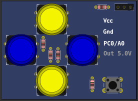
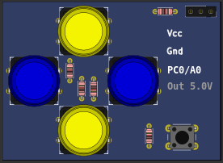

10.2.6 Gamepad (Analogic)
This part is a gamepad with 5 push buttons and one analogic output.

The gamepad can be controlled by keyboards keys:
- Button A - key ’L’
- Button B - key ’I’
- Button C - key ’K’
- Button D - key ’J’
- Button E - key ’O’
This part is a gamepad with 5 push buttons and one analogic output.

The gamepad can be controlled by keyboards keys: